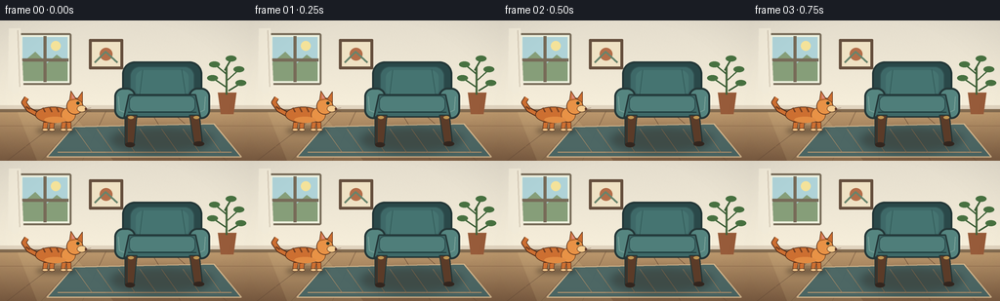
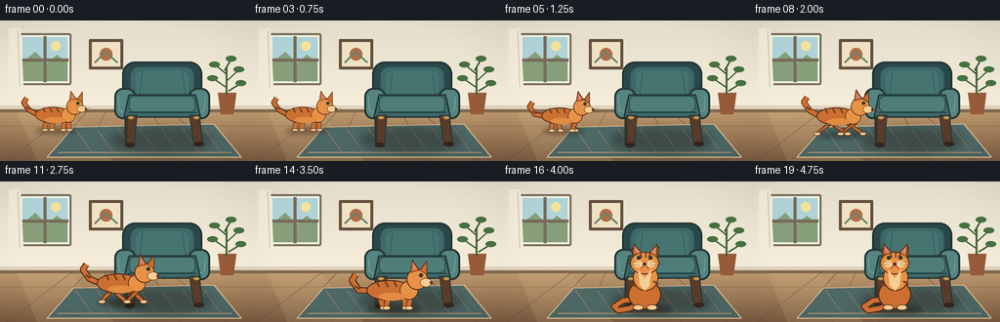
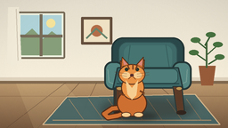

CODING AGENTS AS PIXEL WORLD MODELS
traex/GPT-5.6-Sol · dynamic_spatial_relationship_0006
点击播放 · 原生 RGB 像素
逐轮保存的候选
回放视频、检查图与代码变化。
每份候选均可单独播放。实际图片检查记录在下方工具轨迹中。
候选 01播放与检查图
点击播放 · 原生 RGB 像素


展开代码变化
--- 上一保存版本
+++ 本次保存版本
@@ -0,0 +1,243 @@
+from pathlib import Path
+import json, math
+import numpy as np
+from PIL import Image, ImageDraw, ImageFilter
+import artifact_io
+
+CASE = Path(__file__).resolve().parent
+SPEC = json.loads((CASE / 'task_spec.json').read_text())
+W, H, N = SPEC['width'], SPEC['height'], SPEC['frames']
+S = 4
+w,h=W*S,H*S
+rng=np.random.default_rng(19)
+
+
+def q(v): return int(round(v*S))
+def box(x0,y0,x1,y1): return tuple(q(v) for v in (x0,y0,x1,y1))
+def pts(seq): return [(q(x),q(y)) for x,y in seq]
+
+def ellipse(d, b, fill, outline=None, width=1):
+ d.ellipse(box(*b), fill=fill, outline=outline, width=q(width) if outline else 1)
+def polygon(d, p, fill, outline=None, width=1):
+ d.polygon(pts(p), fill=fill)
+ if outline: d.line(pts(p+[p[0]]), fill=outline, width=q(width), joint='curve')
+def line(d,p,fill,width=1): d.line(pts(p),fill=fill,width=q(width),joint='curve')
+
+def background():
+ a=np.zeros((h,w,3),dtype=np.float32)
+ top=np.array([228,221,205.]); bot=np.array([247,239,219.])
+ split=q(91)
+ for yy in range(split):
+ z=yy/max(1,split-1); a[yy,:,:]=top*(1-z)+bot*z
+ ft=np.array([191,155,111.]); fb=np.array([122,91,65.])
+ for yy in range(split,h):
+ z=(yy-split)/max(1,h-split-1); a[yy,:,:]=ft*(1-z)+fb*z
+ # very subtle fixed material grain
+ noise=rng.normal(0,1.3,(h,w,1)); a=np.clip(a+noise,0,255).astype(np.uint8)
+ im=Image.fromarray(a,'RGB'); d=ImageDraw.Draw(im)
+ # sunlit window inset
+ d.rounded_rectangle(box(19,13,73,66), radius=q(2), fill=(239,242,224), outline=(119,107,88), width=q(2))
+ d.rectangle(box(23,17,69,62), fill=(169,206,209))
+ # hazy sky gradient bands / garden
+ d.rectangle(box(23,17,69,38), fill=(175,211,216))
+ d.polygon(pts([(23,43),(36,32),(48,44),(58,35),(69,43),(69,62),(23,62)]), fill=(134,158,121))
+ d.ellipse(box(52,21,62,31), fill=(244,226,154))
+ d.rectangle(box(44.5,16,47.5,63), fill=(119,107,88))
+ d.rectangle(box(22,39,70,42), fill=(119,107,88))
+ # sheer curtain edge
+ d.polygon(pts([(9,8),(21,8),(24,69),(15,75),(8,70)]), fill=(242,235,217))
+ line(d,[(18,10),(20,68)],(207,196,177),1)
+ # artwork
+ d.rounded_rectangle(box(91,19,126,50), radius=q(1), fill=(101,79,61), width=q(1))
+ d.rectangle(box(94,22,123,47), fill=(239,226,196))
+ d.ellipse(box(102,28,115,41), fill=(179,110,73))
+ line(d,[(97,43),(108,32),(120,43)],(103,132,108),2)
+ # baseboard
+ d.rectangle(box(0,87,256,93), fill=(224,211,190))
+ d.rectangle(box(0,91,256,94), fill=(130,106,79))
+ # floorboards perspective / seams
+ for x in [7,42,84,132,185,232]: line(d,[(128+(x-128)*.45,93),(x,144)],(108,80,58),.55)
+ for y in [108,129]: line(d,[(0,y),(256,y)],(143,108,76),.55)
+ # warm light patch
+ overlay=Image.new('RGBA',(w,h),(0,0,0,0)); od=ImageDraw.Draw(overlay)
+ od.polygon(pts([(18,94),(72,94),(116,144),(38,144)]), fill=(255,230,169,28))
+ im=Image.alpha_composite(im.convert('RGBA'),overlay).convert('RGB')
+ return im
+
+BG=background()
+
+def draw_rug(im):
+ layer=Image.new('RGBA',(w,h),(0,0,0,0)); d=ImageDraw.Draw(layer)
+ polygon(d,[(75,109),(219,106),(247,140),(48,140)],(70,101,101,235))
+ # rug border and simple diamond weave
+ line(d,[(75,109),(219,106),(247,140),(48,140),(75,109)],(218,189,147,220),1.3)
+ line(d,[(59,135),(237,135)],(213,182,137,130),1)
+ for x in range(77,230,22):
+ line(d,[(x,111),(x+17,135)],(206,177,133,55),.6)
+ im.alpha_composite(layer)
+
+def draw_plant(im):
+ d=ImageDraw.Draw(im)
+ # behind furniture, right side
+ polygon(d,[(223,74),(242,74),(239,96),(226,96)],(151,91,58,255))
+ line(d,[(232,76),(232,48)],(66,98,57,255),2)
+ leaves=[(232,55,220,45),(233,61,245,50),(231,68,218,59),(234,72,247,64),(230,51,237,39)]
+ for x,y,tx,ty in leaves:
+ line(d,[(x,y),(tx,ty)],(56,91,51,255),1.5)
+ ellipse(d,(tx-6,ty-3,tx+5,ty+3),(71,113,64,255))
+
+def chair_shadow(im):
+ sh=Image.new('RGBA',(w,h),(0,0,0,0)); d=ImageDraw.Draw(sh)
+ ellipse(d,(113,110,217,135),(38,27,20,92))
+ sh=sh.filter(ImageFilter.GaussianBlur(q(4))); im.alpha_composite(sh)
+
+def draw_chair(im):
+ # substantial teal armchair in fixed center-right, facing viewer
+ d=ImageDraw.Draw(im)
+ outline=(35,54,55,255); dark=(42,72,73,255); mid=(62,105,104,255); light=(85,133,128,255)
+ # rear legs
+ polygon(d,[(128,89),(136,89),(134,126),(128,127)],(76,51,37,255),outline,1)
+ polygon(d,[(196,88),(203,88),(207,124),(201,125)],(76,51,37,255),outline,1)
+ # chair back outer silhouette
+ d.rounded_rectangle(box(125,42,207,98),radius=q(13),fill=dark,outline=outline,width=q(2))
+ # back cushion
+ d.rounded_rectangle(box(133,47,199,84),radius=q(10),fill=mid,outline=(49,82,82,255),width=q(1))
+ # soft center highlight
+ d.rounded_rectangle(box(139,51,193,78),radius=q(8),fill=(69,116,113,255))
+ # vertical cushion seams
+ line(d,[(146,51),(143,76)],(49,88,87,180),.7); line(d,[(186,50),(190,76)],(49,88,87,180),.7)
+ # arms, then seat
+ d.rounded_rectangle(box(117,69,139,101),radius=q(9),fill=light,outline=outline,width=q(2))
+ d.rounded_rectangle(box(193,69,215,101),radius=q(9),fill=light,outline=outline,width=q(2))
+ # arm highlights
+ line(d,[(121,78),(122,92),(132,96)],(118,157,149,200),1)
+ line(d,[(210,78),(209,92),(200,96)],(118,157,149,190),1)
+ # seat base / cushion, front edge
+ polygon(d,[(132,76),(200,76),(205,99),(127,99)],mid,outline,1.5)
+ d.rounded_rectangle(box(132,77,200,94),radius=q(6),fill=(79,126,122,255),outline=(43,76,77,255),width=q(1))
+ line(d,[(131,94),(201,94)],(31,58,60,255),1)
+ # front legs
+ polygon(d,[(130,97),(140,97),(137,128),(130,128)],(91,59,40,255),outline,1)
+ polygon(d,[(194,97),(204,97),(207,128),(199,128)],(91,59,40,255),outline,1)
+ ellipse(d,(128,125,138,130),(50,38,31,255)); ellipse(d,(198,124,209,129),(50,38,31,255))
+ # small brass details
+ ellipse(d,(131,98,137,101),(192,150,82,255)); ellipse(d,(198,98,204,101),(192,150,82,255))
+
+def cat_shadow(im,cx,ground,scale,run):
+ sh=Image.new('RGBA',(w,h),(0,0,0,0)); d=ImageDraw.Draw(sh)
+ ellipse(d,(cx-26*scale,ground-3*scale,cx+28*scale,ground+5*scale),(36,24,18,110))
+ sh=sh.filter(ImageFilter.GaussianBlur(q(2.5))); im.alpha_composite(sh)
+
+def tr(cx,ground,sc,x,y): return (cx+x*sc,ground+y*sc)
+def poly_local(d,cx,g,sc,p,fill,outline=None,width=1): polygon(d,[tr(cx,g,sc,x,y) for x,y in p],fill,outline,width*sc)
+def ell_local(d,cx,g,sc,b,fill,outline=None,width=1):
+ x0,y0,x1,y1=b; ellipse(d,(cx+x0*sc,g+y0*sc,cx+x1*sc,g+y1*sc),fill,outline,width*sc)
+def ln_local(d,cx,g,sc,p,fill,width=1): line(d,[tr(cx,g,sc,x,y) for x,y in p],fill,width*sc)
+
+def draw_cat(im,cx,g,sc,phase,mode,progress):
+ # Orange tabby, left-facing body axis during run but head points to destination (right).
+ d=ImageDraw.Draw(im)
+ edge=(80,43,24,255); orange=(205,111,49,255); hi=(232,146,70,255); cream=(246,205,144,255); stripe=(116,61,31,255)
+ if mode=='sit':
+ # tail curls across floor
+ tail=[(-5,-10),(-22,-8),(-31,-2),(-27,2),(-16,0),(-5,-4)]
+ ln_local(d,cx,g,sc,tail,edge,7); ln_local(d,cx,g,sc,tail,orange,4.8)
+ # haunch and upright chest
+ ell_local(d,cx,g,sc,(-17,-29,17,1),orange,edge,1.2)
+ ell_local(d,cx,g,sc,(-12,-45,14,-18),hi,edge,1.1)
+ # paws
+ ell_local(d,cx,g,sc,(-12,-4,-1,2),cream,edge,.8); ell_local(d,cx,g,sc,(2,-4,13,2),cream,edge,.8)
+ # head and ears, facing camera
+ poly_local(d,cx,g,sc,[(-12,-48),(-13,-62),(-5,-56),(5,-57),(14,-63),(13,-47)],orange,edge,1)
+ ell_local(d,cx,g,sc,(-15,-58,15,-35),hi,edge,1)
+ poly_local(d,cx,g,sc,[(-12,-55),(-11,-66),(-3,-57)],orange,edge,.8)
+ poly_local(d,cx,g,sc,[(5,-57),(13,-66),(12,-53)],orange,edge,.8)
+ poly_local(d,cx,g,sc,[(-9,-57),(-10,-63),(-5,-58)],(218,137,126,255))
+ poly_local(d,cx,g,sc,[(7,-58),(12,-63),(11,-56)],(218,137,126,255))
+ # muzzle eyes nose
+ ell_local(d,cx,g,sc,(-11,-49,-2,-42),cream); ell_local(d,cx,g,sc,(2,-49,11,-42),cream)
+ ell_local(d,cx,g,sc,(-8,-54,-4,-50),(41,54,42,255)); ell_local(d,cx,g,sc,(4,-54,8,-50),(41,54,42,255))
+ ell_local(d,cx,g,sc,(-2,-47,2,-44),(88,48,44,255))
+ ln_local(d,cx,g,sc,[(-1,-44),(-4,-41)],edge,.6); ln_local(d,cx,g,sc,[(1,-44),(4,-41)],edge,.6)
+ for yy in [-47,-44]:
+ ln_local(d,cx,g,sc,[(-6,yy),(-19,yy-2)],(90,59,42,210),.5)
+ ln_local(d,cx,g,sc,[(6,yy),(19,yy-2)],(90,59,42,210),.5)
+ # tabby marks
+ ln_local(d,cx,g,sc,[(-5,-57),(-3,-52)],stripe,1.5); ln_local(d,cx,g,sc,[(1,-58),(1,-52)],stripe,1.5); ln_local(d,cx,g,sc,[(6,-57),(4,-52)],stripe,1.5)
+ ln_local(d,cx,g,sc,[(-14,-25),(-8,-23)],stripe,2); ln_local(d,cx,g,sc,[(9,-28),(14,-25)],stripe,2)
+ # chest bib
+ poly_local(d,cx,g,sc,[(-7,-40),(0,-31),(7,-40),(5,-23),(0,-18),(-5,-24)],cream)
+ return
+
+ # running/standing side profile. Body direction points right.
+ bob = (math.sin(phase*2*math.pi)*1.5 if mode=='run' else 0)
+ # tail expressive, trailing left
+ tail_y = -23 + (5*math.sin(phase*2*math.pi) if mode=='run' else -3)
+ tail=[(-22,-19+bob),(-35,tail_y),(-42,tail_y-10),(-38,tail_y-16)]
+ ln_local(d,cx,g,sc,tail,edge,7); ln_local(d,cx,g,sc,tail,orange,4.8)
+ # leg gait, arranged underneath body
+ if mode=='run':
+ a=math.sin(phase*2*math.pi)
+ legs=[(-13,-10,-18+9*a,0),(-5,-9,2-9*a,0),(12,-11,21-8*a,0),(18,-12,9+8*a,0)]
+ else:
+ legs=[(-13,-10,-14,0),(-5,-9,-5,0),(11,-10,10,0),(17,-10,18,0)]
+ for lx,ly,fx,fy in legs:
+ # tapered legs with cream socks
+ poly_local(d,cx,g,sc,[(lx-3,ly),(lx+3,ly),(fx+2,fy-1),(fx-3,fy)],orange,edge,.8)
+ ell_local(d,cx,g,sc,(fx-4,-2,fx+4,2),cream,edge,.6)
+ # torso and shoulder
+ ell_local(d,cx,g,sc,(-27,-30+bob,20,-9+bob),orange,edge,1.1)
+ ell_local(d,cx,g,sc,(7,-29+bob,26,-10+bob),hi,edge,.8)
+ # belly light
+ ell_local(d,cx,g,sc,(-15,-17+bob,13,-9+bob),(226,139,66,255))
+ # neck and side head
+ ell_local(d,cx,g,sc,(14,-42+bob,36,-20+bob),hi,edge,1)
+ # ears
+ poly_local(d,cx,g,sc,[(18,-38+bob),(20,-51+bob),(27,-40+bob)],orange,edge,.8)
+ poly_local(d,cx,g,sc,[(28,-40+bob),(35,-50+bob),(35,-36+bob)],orange,edge,.8)
+ poly_local(d,cx,g,sc,[(21,-41+bob),(21,-47+bob),(25,-41+bob)],(218,137,126,255))
+ # snout and face
+ ell_local(d,cx,g,sc,(28,-32+bob,40,-23+bob),cream,edge,.6)
+ ell_local(d,cx,g,sc,(27,-37+bob,31,-33+bob),(44,55,37,255))
+ ell_local(d,cx,g,sc,(38,-29+bob,41,-26+bob),(90,47,39,255))
+ ln_local(d,cx,g,sc,[(38,-27+bob),(46,-29+bob)],(95,64,45,210),.45)
+ ln_local(d,cx,g,sc,[(38,-26+bob),(46,-24+bob)],(95,64,45,210),.45)
+ # stripes
+ for xx in [-17,-8,1]: ln_local(d,cx,g,sc,[(xx,-29+bob),(xx+3,-23+bob)],stripe,1.8)
+ ln_local(d,cx,g,sc,[(-34,tail_y-1),(-39,tail_y-4)],stripe,2)
+
+
+def frame_at(i):
+ im=BG.convert('RGBA')
+ draw_rug(im); draw_plant(im); chair_shadow(im); draw_chair(im)
+ # Hold visibly to the left first, run in an inward arc, then sit in front.
+ if i <= 3:
+ p=0.0; mode='stand'
+ elif i <= 15:
+ u=(i-3)/12
+ p=u*u*(3-2*u)
+ mode='run'
+ else:
+ p=1.0; mode='sit'
+ cx=57 + 91*p
+ ground=112 + 18*p - 3*math.sin(math.pi*p)
+ sc=.78 + .22*p
+ phase=(i-4)*.42
+ cat_shadow(im,cx,ground,sc,mode=='run')
+ # restrained motion streak only during fastest middle frames, behind subject
+ if mode=='run' and 7 <= i <= 12:
+ streak=Image.new('RGBA',(w,h),(0,0,0,0)); sd=ImageDraw.Draw(streak)
+ for k,alpha in [(1,22),(2,10)]:
+ ellipse(sd,(cx-28-k*7,ground-27*sc,cx+12-k*7,ground-11*sc),(218,126,55,alpha))
+ streak=streak.filter(ImageFilter.GaussianBlur(q(2))); im.alpha_composite(streak)
+ draw_cat(im,cx,ground,sc,phase,mode,p)
+ # soft cinematic vignette
+ arr=np.array(im.convert('RGB').resize((W,H),Image.Resampling.LANCZOS),dtype=np.float32)
+ yy,xx=np.mgrid[0:H,0:W]
+ r=((xx-W/2)/(W*.72))**2+((yy-H/2)/(H*.85))**2
+ shade=np.clip(1-.09*np.maximum(r-.35,0),.89,1)[...,None]
+ arr=np.clip(arr*shade,0,255).astype(np.uint8)
+ return arr
+
+frames=np.stack([frame_at(i) for i in range(N)],axis=0)
+artifact_io.save(frames, CASE)
可观测工具轨迹
实际执行的命令与返回图片。
命令 1exit 0
/bin/bash -lc "cat prompt.txt && printf '\\n---RULES---\\n' && cat GENERATION_RULES.md && printf '\\n---SPEC---\\n' && cat task_spec.json"
命令 2exit 0
/bin/bash -lc "find . -maxdepth 2 -type f -printf '%p\\n' | sort"
命令 3exit 0
/bin/bash -lc 'cat artifact_io.py'
命令 4exit 0
/bin/bash -lc "cat > generate.py <<'PY'
from pathlib import Path
import json, math
import numpy as np
from PIL import Image, ImageDraw, ImageFilter
import artifact_io
CASE = Path(__file__).resolve().parent
SPEC = json.loads((CASE / 'task_spec.json').read_text())
W, H, N = SPEC['width'], SPEC['height'], SPEC['frames']
S = 4
w,h=W*S,H*S
rng=np.random.default_rng(19)
def q(v): return int(round(v*S))
def box(x0,y0,x1,y1): return tuple(q(v) for v in (x0,y0,x1,y1))
def pts(seq): return [(q(x),q(y)) for x,y in seq]
def ellipse(d, b, fill, outline=None, width=1):
d.ellipse(box(*b), fill=fill, outline=outline, width=q(width) if outline else 1)
def polygon(d, p, fill, outline=None, width=1):
d.polygon(pts(p), fill=fill)
if outline: d.line(pts(p+[p[0]]), fill=outline, width=q(width), joint='curve')
def line(d,p,fill,width=1): d.line(pts(p),fill=fill,width=q(width),joint='curve')
def background():
a=np.zeros((h,w,3),dtype=np.float32)
top=np.array([228,221,205.]); bot=np.array([247,239,219.])
split=q(91)
for yy in range(split):
z=yy/max(1,split-1); a[yy,:,:]=top*(1-z)+bot*z
ft=np.array([191,155,111.]); fb=np.array([122,91,65.])
for yy in range(split,h):
z=(yy-split)/max(1,h-split-1); a[yy,:,:]=ft*(1-z)+fb*z
# very subtle fixed material grain
noise=rng.normal(0,1.3,(h,w,1)); a=np.clip(a+noise,0,255).astype(np.uint8)
im=Image.fromarray(a,'RGB'); d=ImageDraw.Draw(im)
# sunlit window inset
d.rounded_rectangle(box(19,13,73,66), radius=q(2), fill=(239,242,224), outline=(119,107,88), width=q(2))
d.rectangle(box(23,17,69,62), fill=(169,206,209))
# hazy sky gradient bands / garden
d.rectangle(box(23,17,69,38), fill=(175,211,216))
d.polygon(pts([(23,43),(36,32),(48,44),(58,35),(69,43),(69,62),(23,62)]), fill=(134,158,121))
d.ellipse(box(52,21,62,31), fill=(244,226,154))
d.rectangle(box(44.5,16,47.5,63), fill=(119,107,88))
d.rectangle(box(22,39,70,42), fill=(119,107,88))
# sheer curtain edge
d.polygon(pts([(9,8),(21,8),(24,69),(15,75),(8,70)]), fill=(242,235,217))
line(d,[(18,10),(20,68)],(207,196,177),1)
# artwork
d.rounded_rectangle(box(91,19,126,50), radius=q(1), fill=(101,79,61), width=q(1))
d.rectangle(box(94,22,123,47), fill=(239,226,196))
d.ellipse(box(102,28,115,41), fill=(179,110,73))
line(d,[(97,43),(108,32),(120,43)],(103,132,108),2)
# baseboard
d.rectangle(box(0,87,256,93), fill=(224,211,190))
d.rectangle(box(0,91,256,94), fill=(130,106,79))
# floorboards perspective / seams
for x in [7,42,84,132,185,232]: line(d,[(128+(x-128)*.45,93),(x,144)],(108,80,58),.55)
for y in [108,129]: line(d,[(0,y),(256,y)],(143,108,76),.55)
# warm light patch
overlay=Image.new('RGBA',(w,h),(0,0,0,0)); od=ImageDraw.Draw(overlay)
od.polygon(pts([(18,94),(72,94),(116,144),(38,144)]), fill=(255,230,169,28))
im=Image.alpha_composite(im.convert('RGBA'),overlay).convert('RGB')
return im
BG=background()
def draw_rug(im):
layer=Image.new('RGBA',(w,h),(0,0,0,0)); d=ImageDraw.Draw(layer)
polygon(d,[(75,109),(219,106),(247,140),(48,140)],(70,101,101,235))
# rug border and simple diamond weave
line(d,[(75,109),(219,106),(247,140),(48,140),(75,109)],(218,189,147,220),1.3)
line(d,[(59,135),(237,135)],(213,182,137,130),1)
for x in range(77,230,22):
line(d,[(x,111),(x+17,135)],(206,177,133,55),.6)
im.alpha_composite(layer)
def draw_plant(im):
d=ImageDraw.Draw(im)
# behind furniture, right side
polygon(d,[(223,74),(242,74),(239,96),(226,96)],(151,91,58,255))
line(d,[(232,76),(232,48)],(66,98,57,255),2)
leaves=[(232,55,220,45),(233,61,245,50),(231,68,218,59),(234,72,247,64),(230,51,237,39)]
for x,y,tx,ty in leaves:
line(d,[(x,y),(tx,ty)],(56,91,51,255),1.5)
ellipse(d,(tx-6,ty-3,tx+5,ty+3),(71,113,64,255))
def chair_shadow(im):
sh=Image.new('RGBA',(w,h),(0,0,0,0)); d=ImageDraw.Draw(sh)
ellipse(d,(113,110,217,135),(38,27,20,92))
sh=sh.filter(ImageFilter.GaussianBlur(q(4))); im.alpha_composite(sh)
def draw_chair(im):
# substantial teal armchair in fixed center-right, facing viewer
d=ImageDraw.Draw(im)
outline=(35,54,55,255); dark=(42,72,73,255); mid=(62,105,104,255); light=(85,133,128,255)
# rear legs
polygon(d,[(128,89),(136,89),(134,126),(128,127)],(76,51,37,255),outline,1)
polygon(d,[(196,88),(203,88),(207,124),(201,125)],(76,51,37,255),outline,1)
# chair back outer silhouette
d.rounded_rectangle(box(125,42,207,98),radius=q(13),fill=dark,outline=outline,width=q(2))
# back cushion
d.rounded_rectangle(box(133,47,199,84),radius=q(10),fill=mid,outline=(49,82,82,255),width=q(1))
# soft center highlight
d.rounded_rectangle(box(139,51,193,78),radius=q(8),fill=(69,116,113,255))
# vertical cushion seams
line(d,[(146,51),(143,76)],(49,88,87,180),.7); line(d,[(186,50),(190,76)],(49,88,87,180),.7)
# arms, then seat
d.rounded_rectangle(box(117,69,139,101),radius=q(9),fill=light,outline=outline,width=q(2))
d.rounded_rectangle(box(193,69,215,101),radius=q(9),fill=light,outline=outline,width=q(2))
# arm highlights
line(d,[(121,78),(122,92),(132,96)],(118,157,149,200),1)
line(d,[(210,78),(209,92),(200,96)],(118,157,149,190),1)
# seat base / cushion, front edge
polygon(d,[(132,76),(200,76),(205,99),(127,99)],mid,outline,1.5)
d.rounded_rectangle(box(132,77,200,94),radius=q(6),fill=(79,126,122,255),outline=(43,76,77,255),width=q(1))
line(d,[(131,94),(201,94)],(31,58,60,255),1)
# front legs
polygon(d,[(130,97),(140,97),(137,128),(130,128)],(91,59,40,255),outline,1)
polygon(d,[(194,97),(204,97),(207,128),(199,128)],(91,59,40,255),outline,1)
ellipse(d,(128,125,138,130),(50,38,31,255)); ellipse(d,(198,124,209,129),(50,38,31,255))
# small brass details
ellipse(d,(131,98,137,101),(192,150,82,255)); ellipse(d,(198,98,204,101),(192,150,82,255))
def cat_shadow(im,cx,ground,scale,run):
sh=Image.new('RGBA',(w,h),(0,0,0,0)); d=ImageDraw.Draw(sh)
ellipse(d,(cx-26*scale,ground-3*scale,cx+28*scale,ground+5*scale),(36,24,18,110))
sh=sh.filter(ImageFilter.GaussianBlur(q(2.5))); im.alpha_composite(sh)
def tr(cx,ground,sc,x,y): return (cx+x*sc,ground+y*sc)
def poly_local(d,cx,g,sc,p,fill,outline=None,width=1): polygon(d,[tr(cx,g,sc,x,y) for x,y in p],fill,outline,width*sc)
def ell_local(d,cx,g,sc,b,fill,outline=None,width=1):
x0,y0,x1,y1=b; ellipse(d,(cx+x0*sc,g+y0*sc,cx+x1*sc,g+y1*sc),fill,outline,width*sc)
def ln_local(d,cx,g,sc,p,fill,width=1): line(d,[tr(cx,g,sc,x,y) for x,y in p],fill,width*sc)
def draw_cat(im,cx,g,sc,phase,mode,progress):
# Orange tabby, left-facing body axis during run but head points to destination (right).
d=ImageDraw.Draw(im)
edge=(80,43,24,255); orange=(205,111,49,255); hi=(232,146,70,255); cream=(246,205,144,255); stripe=(116,61,31,255)
if mode=='sit':
# tail curls across floor
tail=[(-5,-10),(-22,-8),(-31,-2),(-27,2),(-16,0),(-5,-4)]
ln_local(d,cx,g,sc,tail,edge,7); ln_local(d,cx,g,sc,tail,orange,4.8)
# haunch and upright chest
ell_local(d,cx,g,sc,(-17,-29,17,1),orange,edge,1.2)
ell_local(d,cx,g,sc,(-12,-45,14,-18),hi,edge,1.1)
# paws
ell_local(d,cx,g,sc,(-12,-4,-1,2),cream,edge,.8); ell_local(d,cx,g,sc,(2,-4,13,2),cream,edge,.8)
# head and ears, facing camera
poly_local(d,cx,g,sc,[(-12,-48),(-13,-62),(-5,-56),(5,-57),(14,-63),(13,-47)],orange,edge,1)
ell_local(d,cx,g,sc,(-15,-58,15,-35),hi,edge,1)
poly_local(d,cx,g,sc,[(-12,-55),(-11,-66),(-3,-57)],orange,edge,.8)
poly_local(d,cx,g,sc,[(5,-57),(13,-66),(12,-53)],orange,edge,.8)
poly_local(d,cx,g,sc,[(-9,-57),(-10,-63),(-5,-58)],(218,137,126,255))
poly_local(d,cx,g,sc,[(7,-58),(12,-63),(11,-56)],(218,137,126,255))
# muzzle eyes nose
ell_local(d,cx,g,sc,(-11,-49,-2,-42),cream); ell_local(d,cx,g,sc,(2,-49,11,-42),cream)
ell_local(d,cx,g,sc,(-8,-54,-4,-50),(41,54,42,255)); ell_local(d,cx,g,sc,(4,-54,8,-50),(41,54,42,255))
ell_local(d,cx,g,sc,(-2,-47,2,-44),(88,48,44,255))
ln_local(d,cx,g,sc,[(-1,-44),(-4,-41)],edge,.6); ln_local(d,cx,g,sc,[(1,-44),(4,-41)],edge,.6)
for yy in [-47,-44]:
ln_local(d,cx,g,sc,[(-6,yy),(-19,yy-2)],(90,59,42,210),.5)
ln_local(d,cx,g,sc,[(6,yy),(19,yy-2)],(90,59,42,210),.5)
# tabby marks
ln_local(d,cx,g,sc,[(-5,-57),(-3,-52)],stripe,1.5); ln_local(d,cx,g,sc,[(1,-58),(1,-52)],stripe,1.5); ln_local(d,cx,g,sc,[(6,-57),(4,-52)],stripe,1.5)
ln_local(d,cx,g,sc,[(-14,-25),(-8,-23)],stripe,2); ln_local(d,cx,g,sc,[(9,-28),(14,-25)],stripe,2)
# chest bib
poly_local(d,cx,g,sc,[(-7,-40),(0,-31),(7,-40),(5,-23),(0,-18),(-5,-24)],cream)
return
# running/standing side profile. Body direction points right.
bob = (math.sin(phase*2*math.pi)*1.5 if mode=='run' else 0)
# tail expressive, trailing left
tail_y = -23 + (5*math.sin(phase*2*math.pi) if mode=='run' else -3)
tail=[(-22,-19+bob),(-35,tail_y),(-42,tail_y-10),(-38,tail_y-16)]
ln_local(d,cx,g,sc,tail,edge,7); ln_local(d,cx,g,sc,tail,orange,4.8)
# leg gait, arranged underneath body
if mode=='run':
a=math.sin(phase*2*math.pi)
legs=[(-13,-10,-18+9*a,0),(-5,-9,2-9*a,0),(12,-11,21-8*a,0),(18,-12,9+8*a,0)]
else:
legs=[(-13,-10,-14,0),(-5,-9,-5,0),(11,-10,10,0),(17,-10,18,0)]
for lx,ly,fx,fy in legs:
# tapered legs with cream socks
poly_local(d,cx,g,sc,[(lx-3,ly),(lx+3,ly),(fx+2,fy-1),(fx-3,fy)],orange,edge,.8)
ell_local(d,cx,g,sc,(fx-4,-2,fx+4,2),cream,edge,.6)
# torso and shoulder
ell_local(d,cx,g,sc,(-27,-30+bob,20,-9+bob),orange,edge,1.1)
ell_local(d,cx,g,sc,(7,-29+bob,26,-10+bob),hi,edge,.8)
# belly light
ell_local(d,cx,g,sc,(-15,-17+bob,13,-9+bob),(226,139,66,255))
# neck and side head
ell_local(d,cx,g,sc,(14,-42+bob,36,-20+bob),hi,edge,1)
# ears
poly_local(d,cx,g,sc,[(18,-38+bob),(20,-51+bob),(27,-40+bob)],orange,edge,.8)
poly_local(d,cx,g,sc,[(28,-40+bob),(35,-50+bob),(35,-36+bob)],orange,edge,.8)
poly_local(d,cx,g,sc,[(21,-41+bob),(21,-47+bob),(25,-41+bob)],(218,137,126,255))
# snout and face
ell_local(d,cx,g,sc,(28,-32+bob,40,-23+bob),cream,edge,.6)
ell_local(d,cx,g,sc,(27,-37+bob,31,-33+bob),(44,55,37,255))
ell_local(d,cx,g,sc,(38,-29+bob,41,-26+bob),(90,47,39,255))
ln_local(d,cx,g,sc,[(38,-27+bob),(46,-29+bob)],(95,64,45,210),.45)
ln_local(d,cx,g,sc,[(38,-26+bob),(46,-24+bob)],(95,64,45,210),.45)
# stripes
for xx in [-17,-8,1]: ln_local(d,cx,g,sc,[(xx,-29+bob),(xx+3,-23+bob)],stripe,1.8)
ln_local(d,cx,g,sc,[(-34,tail_y-1),(-39,tail_y-4)],stripe,2)
def frame_at(i):
im=BG.convert('RGBA')
draw_rug(im); draw_plant(im); chair_shadow(im); draw_chair(im)
# Hold visibly to the left first, run in an inward arc, then sit in front.
if i <= 3:
p=0.0; mode='stand'
elif i <= 15:
u=(i-3)/12
p=u*u*(3-2*u)
mode='run'
else:
p=1.0; mode='sit'
cx=57 + 91*p
ground=112 + 18*p - 3*math.sin(math.pi*p)
sc=.78 + .22*p
phase=(i-4)*.42
cat_shadow(im,cx,ground,sc,mode=='run')
# restrained motion streak only during fastest middle frames, behind subject
if mode=='run' and 7 <= i <= 12:
streak=Image.new('RGBA',(w,h),(0,0,0,0)); sd=ImageDraw.Draw(streak)
for k,alpha in [(1,22),(2,10)]:
ellipse(sd,(cx-28-k*7,ground-27*sc,cx+12-k*7,ground-11*sc),(218,126,55,alpha))
streak=streak.filter(ImageFilter.GaussianBlur(q(2))); im.alpha_composite(streak)
draw_cat(im,cx,ground,sc,phase,mode,p)
# soft cinematic vignette
arr=np.array(im.convert('RGB').resize((W,H),Image.Resampling.LANCZOS),dtype=np.float32)
yy,xx=np.mgrid[0:H,0:W]
r=((xx-W/2)/(W*.72))**2+((yy-H/2)/(H*.85))**2
shade=np.clip(1-.09*np.maximum(r-.35,0),.89,1)[...,None]
arr=np.clip(arr*shade,0,255).astype(np.uint8)
return arr
frames=np.stack([frame_at(i) for i in range(N)],axis=0)
artifact_io.save(frames, CASE)
PY
python generate.py
python - <<'PY'
import numpy as np
from PIL import Image
p=np.load('pixels.npz')['pixels']
print(p.shape,p.dtype,'frames unique', [len(np.unique(p[:,:,i])) for i in [0,3,8,15,19]])
print(Image.open('inspection.png').size)
PY"视觉工具实际返回图片 1

视觉工具实际返回图片 2

保存候选 1 份；完成命令 4 次；可验证图片返回 2 张。原始 API 响应与完整日志保留在本地。